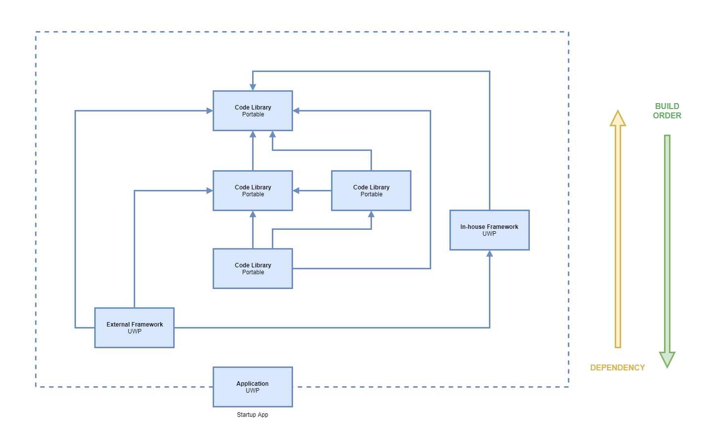

Preventing Visual Studio Recompiles in UWP
I’ve discovered a circumstance where Visual Studio compiles UWP projects every time.
The Problem
In my development team we were being slowed down by unneccessary Visual Studio recompiles of UWP projects. We have several projects in our solution structure with quite a few dependencies between them, so it’s reasonable to expect compiles could take a while if you’re changing things upstream in the dependency chain.

However when nothing was being changed, we were finding certain UWP projects were still being recompiled by Visual Studio. Those recompiles were taking significant time (over a minute on my Surface Pro 5), which was disrupting our developer flow and sapping our productivity. Sometimes you just need to iterate fast through a few debugging sessions to get a task done, and “edit and continue” isn’t possible in all those scenarios.
Research
The first place developers look to solve problems like “Visual Studio builds when nothing has changed” is Google. There’s a lot of developers in the world, and it’s likely someone has seen and solved this type of problem before. A few hits were returned when I searched, but nothing to solve our particular flavour of this issue. One hit did provide a means of diagnosis and potentially solving the problem myself, so I started following that.
Kudos to this external article: Why Visual Studio keeps rebuilding my projects for no good reason
Analysis
The key takeaway from the article is to turn the build output verbosity up to diagnostic levels and examine the output.

When you do this, the output window is flooded with information from MSBuild showing exactly what it’s doing during a build. By examining such output you get a real sense of how much complexity is managed by modern compilers on our behalf, and you gain an appreciation of how much it’s doing for you.
The key clue to what’s causing the problem is in the first few lines of the output of each project build. In my case it was the following line:
1 | Project 'In-house.Framework' is not up to date. Copy to output file 'C:\dev\SolutionFolder\ProjectFolder\Source\In-house.Framework\bin\x64\Debug\Themes\Generic.xaml' missing from output location. |
The build expected a xaml file to be present and it wasn’t. If I did 2 builds consecutively this line persisted, so clearly Visual Studio needed some help to get this file output.
The reflex for any seasoned developer seeing this message is to find the source file and set its Copy to Output Directory property value to Copy if newer. This means that if there is no file in the bin folder already, or the file is present but is an older version at build time, Visual Studio should copy the file there. That way if a developer changes the file during development it will be compiled into the resulting application correctly.
When I looked at this particular file I discovered that property was already set to Copy if newer. For experimentation I tried setting the property to Copy always and rebuilding but Visual Studio never actually output the file.
Forceful Measures
Taking matters into my own hands I copied the file there myself to see if it had any effect. Building now produced a different message:
1 | Project 'In-house.Framework' is not up to date. Input file 'C:\dev\SolutionFolder\ProjectFolder\Source\In-house.Framework\In-house.Framework.csproj' is modified after output file ''. |
This is an interesting message, and I wasn’t entirely sure what it meant as it didn’t match the change I had just made. It seems as though somewhere in the complexity of the generated build process, MSBuild determined the project file was changed so it forced a project rebuild. This rebuild was what I expected so I thought I was making progress.
Once that build had finished I rebuilt without changing anything and was met with the following message:
1 | Project 'In-house.Framework' is not up to date. Project item 'C:\dev\SolutionFolder\ProjectFolder\Source\In-house.Framework\Themes\Generic.xaml' has 'Copy to Output Directory' attribute set to 'Copy always'. |
It appears even though Visual Studio doesn’t actually copy the xaml file, it still checks the Copy to Output Directory property value to see if it needs to force a project rebuild, and does so when the value indicates it should.
Bad Behaviour
It appears that for xaml files at least, the Copy to Output Directory property is no longer useful. In conjunction with the messages from the MSBuild output, this property is now a source of confusion. MSBuild expects a xaml file at build time and the usual means of control to ensure the file is present at compile time simply don’t work.
What’s worse is those usual means of control actually force a rebuild, which is the action you’re trying to prevent in the first place. Given the manipulation of the Copy to Output Directory property is a common practice by developers to help Visual Studio build correctly, this is potentially a cause of common productivity loss among all UWP developers.
Theory about Root Cause
I don’t have the means of digging into Visual Studio’s code or MSBuild to find exactly why this happens. From experimenting with the presence or absence of xaml files in the bin folder, different Copy to Output Directory property values, and many, many rebuilds I have developed a theory about what is going on.
In UWP, the xaml files are no longer used in the build process that requires them to be present in the bin folder. At some point in the past, binary representations of the xaml files (the xbf format) began being built and output for use in XAML applications, rather than the plain text xaml files. It is these xbf files that are important to be present in the bin folder at compile time, not xaml files. The MSBuild messages are leading the developer astray.
I suspect that when the binary format feature was being implemented by Microsoft, an oversight or deprioritised task (or two) meant the messages from MSBuild weren’t updated, and Visual Studio wasn’t updated to properly support the new feature. The result is a perfect storm causing a bad consequence, and the impact is widespread productivity loss for UWP developers.
The Actual Fix
Empowered by the knowledge I had accumulated through investigation and the theory about the root cause, we can finally address the rebuild problem. The fix is simply to tell Visual Studio not to copy the xaml files at all (set the Copy to Output Directory property to Do not copy) and allow the xbf feature to do what it’s supposed to do. Once in this configuration everything works as it should; changes to xaml files are correctly detected by Visual Studio (forcing a recomple), xaml files without changes are correctly skipped (no recompilation), and cleaning the solution (via Visual Studio or by removing the bin and obj folders from the file system by some means) and building correctly forces a recompile.
Of course, you will need to find all the xaml files in your projects that have unwanted Copy to Output Directory property values, because each will cause unwanted builds. This is easily done by opening each of your UWP projects in a text editor (like VS Code) and searching for (and removing) CopyToOutputDirectory elements on any xaml Page elements.
Conclusion
Setting the Copy to Output Directory property to anything but a value of Do not copy on xaml files is now considered a bad decision. Doing so will cause unnecessary compilation of your UWP projects, which will hamper your productivity as a UWP developer.
I hope the various teams at Microsoft can come together to address both the misleading messages from MSBuild and the Visual Studio behaviour around the Copy to Output Directory property on xaml files at build time. An improvement could be to provide a compiler warning when the value is not set to Do not copy; this could improve developer awareness that setting these properties now has unintended and (likely) harmful consequences.
In any case, fixing both of these issues will squash yet another cause of poor productivity for UWP developers, and that would be a good thing.
Preventing Visual Studio Recompiles in UWP
https://www.redperegrine.net/2018/11/10/prevent-vs-recompile-uwp/